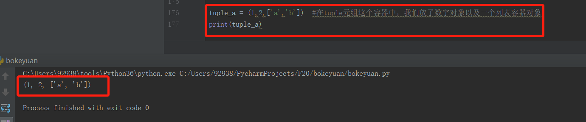

早，在北京的周六，热到不行~~~
今天更新笔记列表（List）、元组(Tuple)以及它们的操作方法
在列表中会经常用到List列表，前面我们认识到的有字符串，字符串数据是不能修改当前字符串里面的任意某个字符
a='abhj' 比如当前变量a指向的字符串，是不能修改已有的字符 a、b、h、j。只能根据他们去创建新的字符串对象。
而List列表里面的每个元素都是可以更改的，并且list列表支持所有的Python对象，来作为列表的元素。
我们先看下列表如何创建：
1 a = [1,33.3,'abc'] #创建一个列表，用变量a指向该列表
2 print(a)我们发现 [1,33.3,'abc'] 就是一个列表，创建List用中括号 [ ] 包围，而且列表里面的元素，可以是数字对象（整数或小数），也可以是字符串对象。我们刚才介绍过，Python内置的任何对象，都可以放进list列表中。
同样的，我们想象下，列表可以是空的吗？答案是当然可以。
1 b = []
2 print(b)接下来我们回顾下我们在字符串提起过的sequence操作。大家对坐标下标的索引肯定很了解了
列表和字符串一样，支持切片（Slice）操作。
我们看代码：
1 a = [1,33.3,'abc',[5,6,'hello']] #创建一个列表，且列表中可以包含列表哦
2 print(a[0])
3 print(a[-2])
4 print(a[1:4]) #选择第一个元素到最后一个元素，最后一个元素下标是不会被选择，所以用4，如果是3将不会选择[5,6,'hello']
5 print(a[-1][-1]) #选择最后一个元素[h,6,'hello']他是一个列表，然后在选择这个列表里面的最后一个元素'hello',所以也用-1
6 print(a[3][2])
接下来我们修改下列表中的元素：
1 a = [1,33.3,'abc',[5,6,'hello']] #创建一个列表，且列表中可以包含列表哦
2 a[1] = 99 #我们把下标为1的元素33.3，修改为99
3 print(a) #打印新的列表最后告诉大家，列表里面的元素，可以是任何其他类型的对象，所以我们会把它List列表，叫做容器对象~~~
我们再看下元组吧：
元组也是一个容器对象哦，同样也是具备Sequence操作的。
但是：元组和字符串一样，是不可变得
创建一个元组：tuple_a，切记新手朋友们，变量名称不能喝函数名称一样，必须要加料，所以不能写成tuple，要加料！！！
1 tuple_a = (1,2,['a','b']) #在tuple元组这个容器中，我们放了数字对象以及一个列表容器对象
2 print(tuple_a)
我们看到元组的创建是用一对括号（）来创建的，并且里面的元素也可以是python任何类型的对象，来作为一个元组的元素。
接下来我们也试试Sequence操作元组吧
1 tuple_a = (1,2,['a','b'])
2 print(tuple_a[0])
3 print(tuple_a[0:])
4 print(tuple_a[1:3])
5 print(tuple_a[:2]) #大家要注意的是，所有的切片操作，都是返回了一个新的对象，原来的元组并没有改变
简单的总结：
1、list列表创建是 [ ] 括号
2、元组的创建是（）括号
3、字符串的创建是 ' ' 、 '' ''、 ''' ''
4、他们三个只有list是可以改变的 a[0] = 1
5、他们都支持Sequence的操作
吃饭喽~~~不懂的朋友可以留言哦，新手在路上，需要你们的支持谢谢
------------来自在学习路上的我。